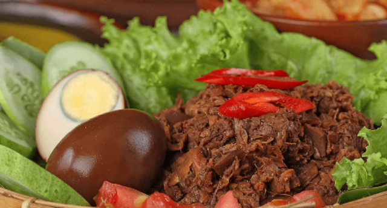

Gudeg
Gudeg adalah masakan tradisional Jawa dari Yogyakarta dan Jawa Tengah, Indonesia. Dalam perkembangannya, masyarakat mengenal gudeg terkenal berasal dari Yogyakarta sehingga membuat kota ini dikenal dengan nama Kota Gudeg. Sejarah gudeg di Yogyakarta dimulai bersamaan dengan dibangunnya kerajaan Mataram Islam di alas Mentaok yang ada di daerah Kotagede pada sekitar tahun 1500-an. Gudeg sejatinya bukan berasal dari kerajaan tapi berasal dari masyarakat. Dikarenakan proses memasaknya yang lama, pada abad 19 belum banyak yang berjualan gudeg. Gudeg mulai populer dan banyak diperdagangkan pada tahun 1940-an saat Presiden Sukarno membangun Universitas Gajah Mada (UGM) hingga sekarang.
Gudeg terbuat dari nangka muda mentah (Jawa: gori). Direbus selama beberapa jam dengan gula aren, dan santan rempah-rempah tambahan termasuk bawang putih, bawang merah, kemiri, biji ketumbar, lengkuas, daun salam, dan daun jati, yang memberikan warna coklat kemerahan ke masakan. Dengan berbagai campuran bumbu tersebut, gudeg menjadi terasa manis dilidah dan memiliki rasa yang khas dan enak sesuai dengan selera masyarakat Jawa pada umumnya. Hal ini sering digambarkan sebagai “nangka hijau rebus yang manis”.
Disajikan apa adanya, gudeg dapat dianggap sebagai makanan vegetarian, karena hanya terdiri dari nangka mentah dan santan. Namun, gudeg umumnya disajikan dengan telur atau ayam. Gudeg disajikan dengan nasi kukus putih, ayam baik sebagai opor ayam atau ayam goreng, telur pindang, opor telur atau telur sekadar rebus, tahu dan atau tempe, dan sambel goreng krecek sup yang terbuat dari kulit sapi renyah.
Ada beberapa jenis gudeg; kering, basah, khas Yogyakarta, khas Solo dan khas Jawa Timur. Gudeg kering hanya memiliki sedikit santan sehingga memiliki sedikit saus sedangkan gudeg basah mempunyai banyak santan. Gudeg paling umum berasal dari Yogyakarta, dan biasanya lebih manis, lebih kering dan berwarna kemerahan karena penambahan daun jati sebagai pewarna. Gudeg Solo dari kota Surakarta lebih berair dan pekat, dengan banyak santan, dan berwarna keputihan karena daun jati umumnya tidak ditambahkan. Gudeg Yogyakarta biasanya disebut “gudeg merah”, sementara gudeg Solo juga disebut “gudeg putih”. Gudeg khas Jawa Timur memiliki rasa lebih pedas dan lebih panas dibandingkan dengan gudeg Yogyakarta, yang manis.
Tim Kami
Dicoding Academy